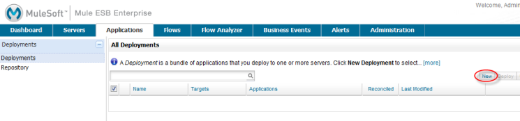
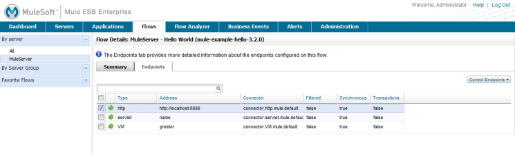
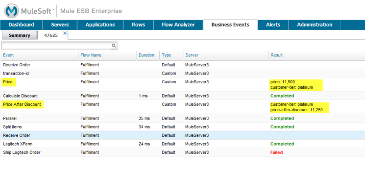

Quick Start Guide to Mule ESB Server and the Management Console
| This guide is for version 3.2.x and 3.1.x. Information specific to Mule 3.2.x is marked as [Mule 3.2]. For information on the version previous to 3.1.x, click [here]. You can use the information in this guide to evaluate a single Mule instance using the management console. [Mule 3.2] If you intend to evaluate Mule high availability clustering, see Evaluating Mule HA Clustering. |
Mule’s management console, the front-end graphical interface providing a window into the Mule ESB server, makes it simple for you to deploy applications on the server and monitor and maintain them later. This topic shows how easy it is to get your applications up and running on the Mule server and to monitor their message flow.
Note: This page assumes that you have downloaded and installed the bundled Mule 3.2.0 ESB enterprise distribution package. If you have not yet downloaded the package, you can do so from here.
The topic takes you through the following tasks step-by-step:
-
Start the Mule server
-
Open the console in a browser
-
Register the server
-
Find the sample applications
-
Deploy an application
-
Run the deployed application
-
Audit the running application
-
Analyze the application’s message flows
Once you know how to run your application and analyze its flows, you’re ready to learn about some of the other tasks you can do with the management console:
Start the Mule Server
If you haven’t yet started the server, do so by running the mule file located in the \bin directory beneath where you unzipped the software package.
For example, on a Windows platform, open a command window and navigate to the Mule \bin directory. Start the Mule server from the command line by typing in mule from within the \bin directory. Running mule.bat also starts the server.
You should see a series of start-up messages in the command window. When the server has completed its startup, you may see a message indicating the server is hosting web applications. Although not shown in the figure below, the message may also indicate the URL, such as http://0.0.0.0:8585/mmc or http://localhost:8585/mmc, to which you point the browser to log in. Logging in via the browser is explained in the next step.

Open the Console and Login
Once the server is up and running, point your browser to the URL http://localhost:8585/mmc to display the login screen.

Use the following credentials to login:
username=admin password=admin
Since you are using the bundled distribution, the server is automatically registered with the console. The console Dashboard screen, which displays when you first login, indicates that there are no servers to register. You can click the icons on the Dashboard, which is essentially a "quick start" section, to move to other console panes, or just close the Dashboard to see a summary of server status and health.
Register the Server
The simplest way to register a server is with the console’s auto-discovery feature: the console automatically senses that a Mule server is running, captures much of the information needed for registration, and thus makes it easy to register any "discovered" servers.
Click the Servers tab, and then click the Unregistered node in the left navigation pane. The window lists all servers that have come online and are not yet registered. Select the server to register, and then click the Register button. You do not have to specify the URL for the server since the auto-discovery feature does this for you. (for more information, see Auto-Discovery for New Servers.)
You can also manually register a server. To do so, click the Servers tab, then the New Server button. In the dialog that opens, enter a name for the server and the URL address for the server. (See Manually Registering a Server.)
Find the Sample Applications
The example applications included with the Mule server package are located beneath the Mule installation folder in the \examples folder. Open the \examples folder and you should see a set of folders, such as \hello, \loanbroker-simple, \stockquote, and so forth.
| [Mule 3.2] The sample applications are preloaded in the server repository. |
To illustrate, suppose you installed the server package in the folder \mule-esb. Open this installation folder, and then open the \examples folder. You should see a set of folders similar to the figure below:

Each folder in \examples contains all the files needed for that particular sample application, plus a README.txt file with specific instructions to run that example. Here are the content of the hello application folder:
To use a sample application, you deploy the example’s archive, or .zip file containing all the application components, to the server. Unless otherwise noted in the README file, the sample applications are built and ready to deploy and run. You deploy the archive file, the .zip file, to the Mule server. For the hello example, this is the mule-example-hello-3.2.0.zip file.
The term application (in the Mule ESB environment) refers to packaging one or many services into a deployment unit that are managed together. Typically, a single application packages services that share a common development life cycle and/or common components. These components are packaged into an archive file, usually a .zip file. When you deploy an application, you actually deploy this archive file. |
When you view the other sample application folders, notice that the sets of files are similiar to the hello application folder. If you are just getting started, you may want to try using the hello application, since it is the simplest example.
Deploy an Application
Once the server is registered, you can deploy applications to it. To get started, you can deploy one of the sample applications, such as the hello example.
Click the Applications tab in the console window to open the All Deployments window.

No applications are deployed yet to this server, so click New to create a new deployment.
You need to create a name for the deployment so that you can later identify it.
-
In the Deployment Name field, enter a name, such as HelloExample. (See the figure below. Notice that the Upload Application button is circled, as well as the pull-down arrow for selecting the server for the deployment.)

You can deploy an application that has already been added to the server repository or upload a web application from your system. Since there are no applications in the repository, upload the hello application from the distribution examples folder.
-
Click the Upload New Application button.
-
A dialog box opens through which you can browse to the application file.
-
Use the browse dialog to locate the folder in which you installed the Mule server and console, then browse to the \examples\hello folder. Select the hello application ZIP file:
mule-example-hello-3.2.0.zip. -
Expand the Advanced Options in the lower half of the dialog box to further specify the workspace folder, the name of the application as you want it to appear in the console when deployed on the server, and the application version number. In this example, the workspace folder is /Applications, the deployed name is helloApp, and the version number is changed to 3.2.

-
Click Add to complete the upload.
Next, specify the server or servers to which you want the application deployed.
-
Use the pull-down list beneath Servers to select a server for deployment. The list includes the registered server and groups of servers.
The screen should look as shown below:
Notice that you can deploy more than one application at a time, and also you can deploy these applications to one or more servers. Click the red X to the right of an application to remove that application from the deployment. Click the red X to the right of a server name to remove that server from the deployment list.
-
Click Deploy to deploy the hello application to the server.
You should see a status message in the upper portion of the screen indicating that deployment is in progress. When completed, the status field indicates whether deployment was successful or not. See the figure below.

If an error occurred, click the Redeploy button to try to redeploy the application.
-
When you click the Deploy button, the application is also saved in the server repository. Click the Save button instead of Deploy to just save the application to the repository without deploying it. You can always deploy the application at a later time.
At any time, you can click the Repository node and see information about this deployment. You can also click the Deployments node and return to the All Deployments screen to see a list of all deployments. From All Deployments, you can select specific deployments, then edit, undeploy, redeploy, or delete them.
Run the Deployed Application
Run the deployed hello application through another browser window or tab. In that browser window or tab, enter the URL http://localhost:8888/?name=Ross. (Feel free to use a name other than "Ross" if you want.)
The browser runs the deployed hello example application, which simply takes the name parameter and inserts it within a simple text line. The browser displays output from the application, such as: Hello Ross, how are you?
Verify Flow Details for the Application
After running the application, return to the console window and use the Flows tab along with the Flow Analyzer tab to analyze the application’s processing. Flows represent the sum of all the services and processing going on within an application, including routers, transformers, and filters.
Click the Flows tab to see the Flows screen, which displays just the flows and services that make up this hello application. Since only the hello application is running on one server, you need not select a particular server. There are three simple flows and one service. The table shows a summary of the number of events handled by the application (both processed and received events), along with the average and total event processing time per individual flow and service. (See the figure below.)

You control flows and services from this screen. To do flow analysis, be sure that the application’s flows have been started. Check the boxes to select specific flows and services, then click the Control Flows button and select Start, Pause, or Stop. Options are grayed out if not applicable. By default, flows are generally started.
Click the flow or service name to see more detailed information about that flow or service. For example, click the Hello World flow name to open a screen with two tabs. The Summary tab displays summary information about this flow. The Endpoints tab displays information about the endpoints of the flow.
The Summary display includes status data and graphs and data about the different events processed and received (asynchronous and synchronous) by the flow.

The Endpoints tab, shown below, displays a table of all endpoints for the flow and data about each endpoint, including the endpoint type, its address, connector information, whether or not it is filtered, if it’s synchronous or not, and whether it handles transactions. Click one or more endpoints and, using the Control Endpoints button, start or stop those endpoints.

Analyze the Flow of Messages on the Application
Now, what is interesting is to see the flow of messages and the message payloads for the hello application.
In the console window, click the Flow Analyzer tab to see details on the message flows. The Flow Analyzer screen displays the Message List for the application. Before you can see this data, you need to specify the server and application, which you do via the left pane of this screen.
Start by selecting the server from the Select a server pull-down list. After you select the server, the Applications section expands and displays deployed applications (deployments) running on the selected server. After you select the deployment, the Flows section expands and in a similar fashion displays the flows and services applicable to the selected application(s). For example, the figure below shows how the screen might look after selecting the helloApp deployment and its flows and services.
Click Start (circled in the above figure) to view the message flows. Then, run the application again, or even several times, from the other browser window.
Notice in the console window that when the application is run the Message List portion of the Flow Analyzer screen fills with message data. The Message List at the top of the screen lists the different messages handled by the application. The table identifies each message by its message id, indicates the flow handling the message, the application, the amount of time to process the message, and a time stamp indicating when the message processing occurred.
To see details about a message, click the message id. The Message Details section in the bottom half of the screen displays more details about the selected message.
The figure below is an example of message data you might see for the Hello World flow. Note that the detail panes are synchronized to the selected message processor in the Message Flow pane. That is, the Before/After Payload and Message Properties panes show the specific data for the selected message processor, which in this example is ChoiceRouter.

The message data for the ChitChat flow is different, as you can see in the next figure:

You can drill down deeper to see further information. In the Message Properties pane, expand the inbound and outbound property nodes to see specific message properties and their before and after values.

Similarly, you can expand the Before Payload and After Payload panes.
Mule 3.2 Clusters and Business Events
Mule 3.2 adds a variety of new features. Perhaps the two most significant features relate to clusters and business events.
Clusters
The management console gives you the ability to create and manage server clusters. A cluster is a group of linked servers that work closely together. In essence, it’s s a virtual server composed of multiple nodes. Once you create and register a cluster, you can deploy applications to it and perform all of the other operations discussed above. Here, for example, is a screen that illustrates deploying an application to a cluster.
You can find out more about working with clusters here.
Business Events
If you examine the illustration in the Clusters section above, you’ll notice that the management console includes a new tab labeled Business Events. The Business Events tab gives you visibility into business transactions and events on your Mule servers, allowing you to track and analyze the flow and disposition of particular messages. For example, using the Business Events tab you can do root cause analysis of failures in a message flow. Or you can do compliance testing and see whether particular steps in a process are performed correctly. The following screen illustrates using the Business Events tab to discover whether a discount is properly applied in an order fulfillment process.

The highlighted data in the screen corresponds to custom events that capture specific payload information. Here, the data for an event listed as "Price" shows the customer’s discount tier as well as the price before the discount is applied. The data for the event listed as "Price After Discount" shows the price after the discount is applied.
You can find out more about working with the Business Events tab here.
Where To Go From Here
Setting alerts (SLAs) for an application are another important task you do through the console. Adding and Managing Alerts and SLAs shows you how to get started with alerts.